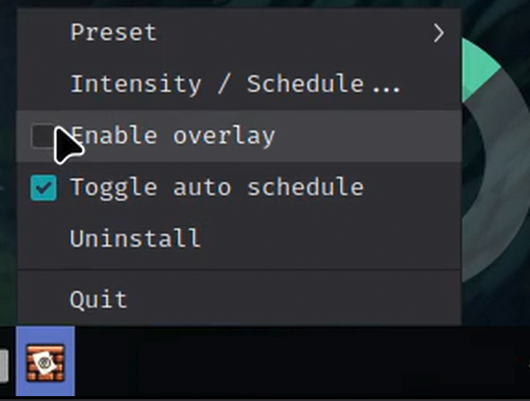

CinnaPaper
Fullscreen, click-through paper-like overlay for Linux Mint/Cinnamon that reduces eye strain.
Overview
CinnaPaper is a lightweight accessibility-focused application that provides a fullscreen, paper-like overlay designed to reduce eye strain for Linux Mint/Cinnamon users. It features customizable color presets, scheduling, and multi-monitor support.
Features
- Click-through overlay for seamless workflow
- Customizable color presets and scheduling
- Multi-monitor support with per-display configuration
- Accessibility-focused design to reduce eye fatigue
Tech Stack
Built with HTML5, CSS3, and JavaScript, CinnaPaper leverages the native desktop environment of Linux Mint/Cinnamon to provide a non-intrusive user experience.